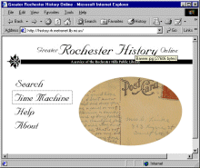

The Community Information
Toolkit
Welcome to the Community Information Toolkit. This goal of
the Toolkit is to provide public libraries and other institutions
with the tools necessary to begin building a Community Information
Network.
This Toolkit provides a 250 page Guidebook; a four-part introductory
training video series; a set of PowerPoint files suitable for
use in training efforts; and a set of demonstration software tools
to provide a community calendar and a community forum. The Software
section also includes complete, step-by-step instructions on installing
Windows NT, Microsoft Internet Information Server (IIS), and the
Toolkit demonstration applications.
See the Overview section for more
information about the Toolkit components. Be sure to note the
Toolkit copyright provisions.
The components of the Toolkit are provided via the Toolkit
Web site, www.mel.org/citoolkit.
Some organizations have also received the Toolkit in CD-ROM format.
The contents of the CD-ROM are identical to the initial contents
of the Web site.
Training the Trainers
The Community Information Toolkit is a multimedia collection
of tools and tips for teaching public library staff and community
partners how to get their local community information on-line.
During this one day training session, trainers were taught how
to use these tools in designing their own electronic community
information curriculum.
The training included:
- A review of web site "best practices"
- Content selection guidelines
- Content conversion and maintenance issues
- Choosing technologies
- Working with digital images, audio and video
The creation of this Toolkit was sponsored by the Library of
Michigan. Funding for the project came from the Ameritech Foundation.
The Toolkit project was managed by Merit Inc.
Demonstration Sites
Two demonstration sites took part in this project:
- The Rochester
Hills Public Library created a Web-accessible database of
community history artifacts, primarily postcards from various
points in time.The database uses
Active Server Pages (ASP) and a Windows NT server running Microsoft
Access. The postcards and other materials were digitized by a
professional photographic processor onto Photo CD format, then
converted to GIF or JPEG image format for display on the Web.
The database enables multiple views of the same artifacts; for
instance, a user could conceivably select items to inspect based
on the date the postcard was written, the subject of the photograph
on the postcard, or the name of the person to whom the postcard
was addressed. See Greater
Rochester History Online (GHRO)
- The Romeo District
Library formed a community information networking team to
establish a new community information Web site. The Library Network
provided hands-on training for the Romeo team. In addition, Romeo
installed a Web terminal with special adaptive technologies to
serve the needs of people with visual or motor impairments. Romeo
intends to make use of calendaring software to provide information
on programs, events and schedules of the Parks and Recreation
Department, STAR (Senior Transportation Through Advanced Reservation),
and other community agencies.
Project Participants
- Project Management: Betty Van Dam, Merit Inc.
- Curriculum Development & Demonstration Site Training:
Richard Truxall, The Library Network
- Toolkit Software: Charles R. Severance
- Toolkit Videos: Charles R. Severance, Richard W. Wiggins
- Toolkit Demonstration Web Site: Todd White, Merit
Inc.
- Toolkit CD-ROM and Web Site: Charles R. Severance,
Richard W. Wiggins
- Romeo District Library Demonstration Site Coordinator:
Cynthia McIntyre
- Rochester Hills Public Library Demonstration Site Coordinator:
Larry Neal
- Director of the Michigan Electronic Library (MEL):
Sue Davidsen
Funding and Support
Toolkit development was funded by a grant from Ameritech. The
Toolkit components are copyrighted materials of the Library of
Michigan Foundation. They are provided for use by public libraries
in Michigan and by other institutions wishing to create community
information networks. Please see the copyright
notice.